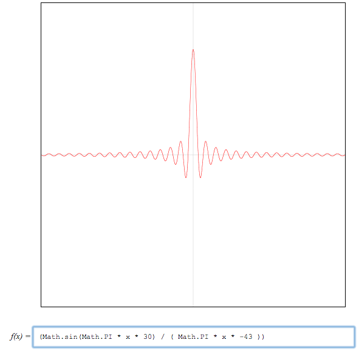

This slider controls the Pitch frequency of the main oscillator
Pitch-Frequency of Pulsaret Waveform
Fundamental Frequency
0 to 20Hz - Infrasonic Range
Fundamental Frequency
20 to 100Hz - Audio Range
This slider controls the Duty cycle (formant frequency) of the main oscillator
Duty cycle-Silence Ratio
This slider controls the rate at which the envelope for the Duty Cycle-Silence Ratio plays at
Duty cycle-Silence Ratio Envelope Rate - 0.002 to 0.3
Duty cycle-Silence Ratio Envelope Rate - 0.0000001 to 0.0003
A waveshaper node is using this Gaussian function shape to envelope the signal for the pulsar trains (Davies and Jonsson 2013)
The other transfer function used in the createPulsaretEnvelope() function is the sine-cardinal (night owl 2012)
The graphs of these transfer functions are generated using Kevin Ennis's "Transfergraph" (Ennis 2013)